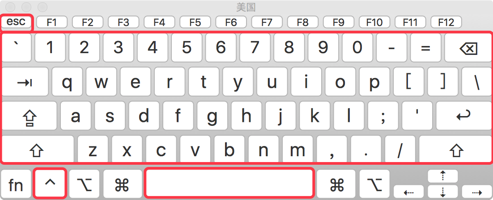

vi —— 终端中的编辑器¶
目标¶
vi简介- 打开和新建文件
- 三种工作模式
- 常用命令
- 分屏命令
- 常用命令速查图
01. vi 简介¶
1.1 学习 vi 的目的¶
- 在工作中，要对 服务器 上的文件进行 简单 的修改，可以使用
ssh远程登录到服务器上，并且使用vi进行快速的编辑即可 - 常见需要修改的文件包括：
- 源程序
- 配置文件，例如
ssh的配置文件~/.ssh/config
- 在没有图形界面的环境下，要编辑文件，
vi是最佳选择！- 每一个要使用 Linux 的程序员，都应该或多或少的学习一些
vi的常用命令
1.2 vi 和 vim¶
- 在很多
Linux发行版中，直接把vi做成vim的软连接
vi¶
vi是Visual interface的简称，是Linux中 最经典 的文本编辑器vi的核心设计思想 —— 让程序员的手指始终保持在键盘的核心区域，就能完成所有的编辑操作

vi的特点：- 没有图形界面 的 功能强大 的编辑器
- 只能是编辑 文本内容，不能对字体、段落进行排版
- 不支持鼠标操作
- 没有菜单
- 只有命令
vi编辑器在 系统管理、服务器管理 编辑文件时，其功能永远不是图形界面的编辑器能比拟的
vim¶
vim = vi improved
vim是从vi发展出来的一个文本编辑器，支持 代码补全、编译 及 错误跳转 等方便编程的功能特别丰富，在程序员中被广泛使用，被称为 编辑器之神
查询软连接命令（知道）¶
- 在很多
Linux发行版中直接把vi做成vim的软连接
# 查找 vi 的运行文件
$ which vi
$ ls -l /usr/bin/vi
$ ls -l /etc/alternatives/vi
$ ls -l /usr/bin/vim.basic
# 查找 vim 的运行文件
$ which vim
$ ls -l /usr/bin/vim
$ ls -l /etc/alternatives/vim
$ ls -l /usr/bin/vim.basic
02. 打开和新建文件¶
- 在终端中输入
vi在后面跟上文件名 即可
- 如果文件已经存在，会直接打开该文件
- 如果文件不存在，会新建一个文件
2.1 打开文件并且定位行¶
- 在日常工作中，有可能会遇到 打开一个文件，并定位到指定行 的情况
-
例如：在开发时，知道某一行代码有错误，可以 快速定位 到出错代码的位置
-
这个时候，可以使用以下命令打开文件
提示：如果只带上
+而不指定行号，会直接定位到文件末尾
2.2 异常处理¶
- 如果
vi异常退出，在磁盘上可能会保存有 交换文件 - 下次再使用
vi编辑该文件时，会看到以下屏幕信息，按下字母d可以 删除交换文件 即可
提示：按下键盘时，注意关闭输入法

03. 三种工作模式¶
-
vi有三种基本工作模式：- 命令模式
- 打开文件首先进入命令模式，是使用
vi的 入口 - 通过 命令 对文件进行常规的编辑操作，例如：定位、翻页、复制、粘贴、删除……
- 在其他图形编辑器下，通过 快捷键 或者 鼠标 实现的操作，都在 命令模式 下实现
- 打开文件首先进入命令模式，是使用
- 末行模式 —— 执行 保存、退出 等操作
- 要退出
vi返回到控制台，需要在末行模式下输入命令 - 末行模式 是
vi的 出口
- 要退出
- 编辑模式 —— 正常的编辑文字
- 命令模式

提示：在
Touch Bar的 Mac 电脑上 ，按ESC不方便，可以使用CTRL + [替代
末行模式命令¶
| 命令 | 英文 | 功能 |
|---|---|---|
| w | write | 保存 |
| q | quit | 退出，如果没有保存，不允许退出 |
| q! | quit | 强行退出，不保存退出 |
| wq | write & quit | 保存并退出 |
| x | 保存并退出 |
04. 常用命令¶
命令线路图¶
- 重复次数
- 在命令模式下，先输入一个数字，再跟上一个命令，可以让该命令 重复执行指定次数
- 移动和选择（多练）
vi之所以快，关键在于 能够快速定位到要编辑的代码行- 移动命令 能够 和 编辑操作 命令 组合使用
- 编辑操作
- 删除、复制、粘贴、替换、缩排
- 撤销和重复
- 查找替换
- 编辑
学习提示¶
vi的命令较多，不要期望一下子全部记住，个别命令忘记了，只是会影响编辑速度而已- 在使用
vi命令时，注意 关闭中文输入法
4.1 移动（基本）¶
- 要熟练使用
vi，首先应该学会怎么在 命令模式 下样快速移动光标 - 编辑操作命令，能够和 移动命令 结合在一起使用
1) 上、下、左、右¶
| 命令 | 功能 | 手指 |
|---|---|---|
| h | 向左 | 食指 |
| j | 向下 | 食指 |
| k | 向上 | 中指 |
| l | 向右 | 无名指 |

2) 行内移动¶
| 命令 | 英文 | 功能 |
|---|---|---|
| w | word | 向后移动一个单词 |
| b | back | 向前移动一个单词 |
| 0 | 行首 | |
| ^ | 行首，第一个不是空白字符的位置 | |
| $ | 行尾 |
3) 行数移动¶
| 命令 | 英文 | 功能 |
|---|---|---|
| gg | go | 文件顶部 |
| G | go | 文件末尾 |
| 数字gg | go | 移动到 数字 对应行数 |
| 数字G | go | 移动到 数字 对应行数 |
| :数字 | 移动到 数字 对应行数 |
4) 屏幕移动¶
| 命令 | 英文 | 功能 |
|---|---|---|
| Ctrl + b | back | 向上翻页 |
| Ctrl + f | forward | 向下翻页 |
| H | Head | 屏幕顶部 |
| M | Middle | 屏幕中间 |
| L | Low | 屏幕底部 |
4.2 移动（程序）¶
1) 段落移动¶
vi中使用 空行 来区分段落- 在程序开发时，通常 一段功能相关的代码会写在一起 —— 之间没有空行
| 命令 | 功能 |
|---|---|
| { | 上一段 |
| } | 下一段 |
2) 括号切换¶
- 在程序世界中，
()、[]、{}使用频率很高，而且 都是成对出现的
| 命令 | 功能 |
|---|---|
| % | 括号匹配及切换 |
3) 标记¶
- 在开发时，某一块代码可能**需要稍后处理**，例如：编辑、查看
- 此时先使用
m增加一个标记，这样可以 在需要时快速地跳转回来 或者 执行其他编辑操作 - 标记名称 可以是
a~z或者A~Z之间的任意 一个 字母 - 添加了标记的 行如果被删除，标记同时被删除
- 如果 在其他行添加了相同名称的标记，之前添加的标记也会被替换掉
| 命令 | 英文 | 功能 |
|---|---|---|
| mx | mark | 添加标记 x，x 是 a~z 或者 A~Z 之间的任意一个字母 |
| 'x | 直接定位到标记 x 所在位置 |
4.3 选中文本（可视模式）¶
- 学习
复制命令前，应该先学会 怎么样选中 要复制的代码 - 在
vi中要选择文本，需要先使用Visual命令切换到 可视模式 vi中提供了 三种 可视模式，可以方便程序员选择 选中文本的方式- 按
ESC可以放弃选中，返回到 命令模式
| 命令 | 模式 | 功能 |
|---|---|---|
| v | 可视模式 | 从光标位置开始按照正常模式选择文本 |
| V | 可视行模式 | 选中光标经过的完整行 |
| Ctrl + v | 可视块模式 | 垂直方向选中文本 |
- 可视模式**下，可以和 **移动命令 连用，例如：
ggVG能够选中所有内容
4.4 撤销和恢复撤销¶
- 在学习编辑命令之前，先要知道怎样撤销之前一次 错误的 编辑动作！
| 命令 | 英文 | 功能 |
|---|---|---|
| u | undo | 撤销上次命令 |
| CTRL + r | redo | 恢复撤销的命令 |
4.5 删除文本¶
| 命令 | 英文 | 功能 |
|---|---|---|
| x | cut | 删除光标所在字符，或者选中文字 |
| d(移动命令) | delete | 删除移动命令对应的内容 |
| dd | delete | 删除光标所在行，可以 ndd 复制多行 |
| D | delete | 删除至行尾 |
提示：如果使用 可视模式 已经选中了一段文本，那么无论使用
d还是x，都可以删除选中文本
- 删除命令可以和 移动命令 连用，以下是常见的组合命令：
* dw # 从光标位置删除到单词末尾
* d0 # 从光标位置删除到一行的起始位置
* d} # 从光标位置删除到段落结尾
* ndd # 从光标位置向下连续删除 n 行
* d代码行G # 从光标所在行 删除到 指定代码行 之间的所有代码
* d'a # 从光标所在行 删除到 标记a 之间的所有代码
4.6 复制、粘贴¶
vi中提供有一个 被复制文本的缓冲区- 复制 命令会将选中的文字保存在缓冲区
- 删除 命令删除的文字会被保存在缓冲区
- 在需要的位置，使用 粘贴 命令可以将缓冲区的文字插入到光标所在位置
| 命令 | 英文 | 功能 |
|---|---|---|
| y(移动命令) | copy | 复制 |
| yy | copy | 复制一行，可以 nyy 复制多行 |
| p | paste | 粘贴 |
提示
- 命令
d、x类似于图形界面的 剪切操作 ——CTRL + X - 命令
y类似于图形界面的 复制操作 ——CTRL + C - 命令
p类似于图形界面的 粘贴操作 ——CTRL + V vi中的 文本缓冲区同样只有一个，如果后续做过 复制、剪切 操作，之前缓冲区中的内容会被替换
注意
vi中的 文本缓冲区 和系统的 剪贴板 不是同一个- 所以在其他软件中使用
CTRL + C复制的内容，不能在vi中通过P命令粘贴 - 可以在 编辑模式 下使用 鼠标右键粘贴
4.7 替换¶
| 命令 | 英文 | 功能 | 工作模式 |
|---|---|---|---|
| r | replace | 替换当前字符 | 命令模式 |
| R | replace | 替换当前行光标后的字符 | 替换模式 |
R命令可以进入 替换模式，替换完成后，按下ESC可以回到 命令模式- 替换命令 的作用就是不用进入 编辑模式，对文件进行 轻量级的修改
4.8 缩排和重复执行¶
| 命令 | 功能 |
|---|---|
| >> | 向右增加缩进 |
| << | 向左减少缩进 |
| . | 重复上次命令 |
- 缩排命令 在开发程序时，统一增加代码的缩进 比较有用！
- 一次性 在选中代码前增加 4 个空格，就叫做 增加缩进
- 一次性 在选中代码前删除 4 个空格，就叫做 减少缩进
- 在 可视模式 下，缩排命令只需要使用 一个
>或者<
在程序中，缩进 通常用来表示代码的归属关系
- 前面空格越少，代码的级别越高
- 前面空格越多，代码的级别越低
4.9 查找¶
常规查找¶
| 命令 | 功能 |
|---|---|
| /str | 查找 str |
- 查找到指定内容之后，使用
Next查找下一个出现的位置：n: 查找下一个N: 查找上一个
- 如果不想看到高亮显示，可以随便查找一个文件中不存在的内容即可
单词快速匹配¶
| 命令 | 功能 |
|---|---|
| * | 向后查找当前光标所在单词 |
| # | 向前查找当前光标所在单词 |
- 在开发中，通过单词快速匹配，可以快速看到这个单词在其他什么位置使用过
4.10 查找并替换¶
- 在
vi中查找和替换命令需要在 末行模式 下执行 - 记忆命令格式：
1) 全局替换¶
- 一次性**替换文件中的 **所有出现的旧文本
- 命令格式如下：
2) 可视区域替换¶
- 先选中 要替换文字的 范围
- 命令格式如下：
3) 确认替换¶
- 如果把末尾的
g改成gc在替换的时候，会有提示！推荐使用！
y-yes替换n-no不替换a-all替换所有q-quit退出替换l-last最后一个，并把光标移动到行首^E向下滚屏^Y向上滚屏
4.11 插入命令¶
- 在
vi中除了常用的i进入 编辑模式 外，还提供了以下命令同样可以进入编辑模式：
| 命令 | 英文 | 功能 | 常用 |
|---|---|---|---|
| i | insert | 在当前字符前插入文本 | 常用 |
| I | insert | 在行首插入文本 | 较常用 |
| a | append | 在当前字符后添加文本 | |
| A | append | 在行末添加文本 | 较常用 |
| o | 在当前行后面插入一空行 | 常用 | |
| O | 在当前行前面插入一空行 | 常用 |

演练 1 —— 编辑命令和数字连用¶
- 在开发中，可能会遇到连续输入
N个同样的字符
在
Python中有简单的方法，但是其他语言中通常需要自己输入
- 例如：
**********连续 10 个星号
要实现这个效果可以在 命令模式 下
- 输入
10，表示要重复 10 次 - 输入
i进入 编辑模式 - 输入
*也就是重复的文字 - 按下
ESC返回到 命令模式，返回之后vi就会把第2、3两步的操作重复10次
提示：正常开发时，在 进入编辑模式之前，不要按数字
演练 2 —— 利用 可视块 给多行代码增加注释¶
- 在开发中，可能会遇到一次性给多行代码 增加注释 的情况
在
Python中，要给代码增加注释，可以在代码前增加一个#
要实现这个效果可以在 命令模式 下
- 移动到要添加注释的 第 1 行代码，按
^来到行首 - 按
CTRL + v进入 可视块 模式 - 使用
j向下连续选中要添加的代码行 - 输入
I进入 编辑模式，并在 行首插入，注意：一定要使用 I - 输入
#也就是注释符号 - 按下
ESC返回到 命令模式，返回之后vi会在之前选中的每一行代码 前 插入#
05. 分屏命令¶
- 属于
vi的高级命令 —— 可以 同时编辑和查看多个文件
5.1 末行命令扩展¶
末行命令 主要是针对文件进行操作的：保存、退出、保存&退出、搜索&替换、另存、新建、浏览文件
| 命令 | 英文 | 功能 |
|---|---|---|
| :e . | edit | 会打开内置的文件浏览器，浏览要当前目录下的文件 |
| :n 文件名 | new | 新建文件 |
| :w 文件名 | write | 另存为，但是仍然编辑当前文件，并不会切换文件 |
提示：切换文件之前，必须保证当前这个文件已经被保存！
- 已经学习过的 末行命令：
| 命令 | 英文 | 功能 |
|---|---|---|
| :w | write | 保存 |
| :q | quit | 退出，如果没有保存，不允许退出 |
| :q! | quit | 强行退出，不保存退出 |
| :wq | write & quit | 保存并退出 |
| :x | 保存并退出 | |
| :%s///gc | 确认搜索并替换 |
在实际开发中，可以使用
w命令 阶段性的备份代码
5.2 分屏命令¶
- 使用 分屏命令，可以 同时编辑和查看多个文件
| 命令 | 英文 | 功能 |
|---|---|---|
| :sp [文件名] | split | 横向增加分屏 |
| :vsp [文件名] | vertical split | 纵向增加分屏 |
1) 切换分屏窗口¶
分屏窗口都是基于
CTRL + W这个快捷键的，w对应的英文单词是window
| 命令 | 英文 | 功能 |
|---|---|---|
| w | window | 切换到下一个窗口 |
| r | reverse | 互换窗口 |
| c | close | 关闭当前窗口，但是不能关闭最后一个窗口 |
| q | quit | 退出当前窗口，如果是最后一个窗口，则关闭 vi |
| o | other | 关闭其他窗口 |
2) 调整窗口大小¶
分屏窗口都是基于
CTRL + W这个快捷键的，w对应的英文单词是window
| 命令 | 英文 | 功能 |
|---|---|---|
| + | 增加窗口高度 | |
| - | 减少窗口高度 | |
| > | 增加窗口宽度 | |
| < | 减少窗口宽度 | |
| = | 等分窗口大小 |
调整窗口宽高的命令可以和数字连用，例如：
5 CTRL + W +连续 5 次增加高度
06. 常用命令速查图¶

vimrc¶
vimrc是vim的配置文件，可以设置 vim 的配置，包括：热键、配色、语法高亮、插件 等Linux中vimrc有两个位置，家目录下的配置文件优先级更高
- 常用的插件有：
- 代码补全
- 代码折叠
- 搜索
- Git 集成
- ……
- 网上有很多高手已经配置好的针对
python开发的vimrc文件，可以下载过来直接使用，或者等大家多Linux比较熟悉后，再行学习！
三种模式下的常用命令¶
命令模式¶
-
移动光标
-
h: ← 左移
- l: → 右移
- j: ↓ 下移
- k: ↑ 上移
- gg: 光标移动文件开头
- G: 光标移动到文件末尾
- 0: 光标移动到行首
- $: 光标移动到行尾
-
123G：跳转到第123行
-
删除
-
x: 删除光标后一个字符,相当于 Del
- X: 删除光标前一个字符,相当于 Backspace
- dw: 删除光标开始位置的字,包含光标所在字符
- 光标必须移动到删除单词的首字符上
- d0: 删除光标前本行所有内容,不包含光标所在字符
- D（d$）: 删除光标后本行所有内容,包含光标所在字符
- dd: 删除光标所在行
- n dd：删除指定的行数
并不是真的删除，实际上是剪切
-
撤销操作
-
u: 一步一步撤销
-
Ctr-r: 反撤销
-
复制粘贴
-
yy: 复制当前行,n yy 复制 n 行
- p: 在光标所在位置向下新开辟一行,粘贴
-
P: 从光标所在行, 开始粘贴
-
可视模式
-
v：按字移动
配合 h、j、k、l 使用y复制选中内容
-
查找操作
-
/hello -> 从光标所在位置向后查找 hello
- n: 下一个
- N：上一个
- ？hello -> 从光标所在位置向前查找 hello
- n: 上一个
- N：下一个
-
在要查询的单词上使用 # 进行查找
-
替换操作
-
r: 替换当前字符
-
文本行移动
-
>>: 文本行右移¶
-
<<: 文本行左移
-
查看 Man Page
-
光标移动到函数上,Shift-k 光标移动到函数上
- 3Shift-k,查看第三章的 ManPage
文本输入模式¶
- 进入输入模式
- i: 插入光标前一个字符
- I: 插入行首
- a: 插入光标后一个字符
- A: 插入行未
- o: 向下新开一行,插入行首
- O: 向上新开一行,插入行首
- s: 删除光标所在的字符
- S：删除当前行
末行模式¶
- 命令
- 行跳转
- :123 -> 跳转到第123行
- 替换
- 替换一行
- :s/abc/123 -> 将当前行中的第一个abc替换为123
- :s/abc/123/g -> 将当前行中的abc全部替换为123
- 替换全部
- :%s/abc/123 -> 将所有行中的第一个abc替换为123
- :%s/abc/123/g -> 将所有行中的abc全部替换为123
- 替换指定行
- :10,30s/abc/123/g -> 将10-30行中的abc全部替换为123
- 执行shell命令
- 末行模式里输入!,后面跟命令